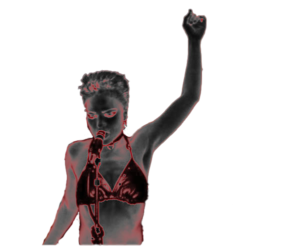
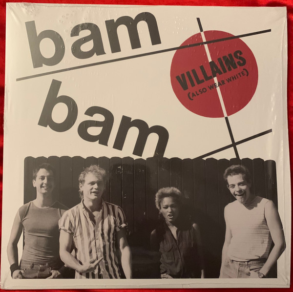

Grunge


Tina Bell was an American singer and songwriter, front woman of the Seattle-based rock band called Bam Bam.
Bam Bam's discography went under the radar compared to more successful bands who gained grunge "status" in the early 1990s such as Nirvana, Alice in Chains, and Mudhoney despite starting about years before most of these bands were formed.



These two albums included sans-serif typography with minimalistic elements reminiscent of Constructivism with bold red shapes and dynamic geometric lines.
Lots of grunge albums incorporated a unique type of font instead of using fonts that were considered commercial and widespread such as helvetica.